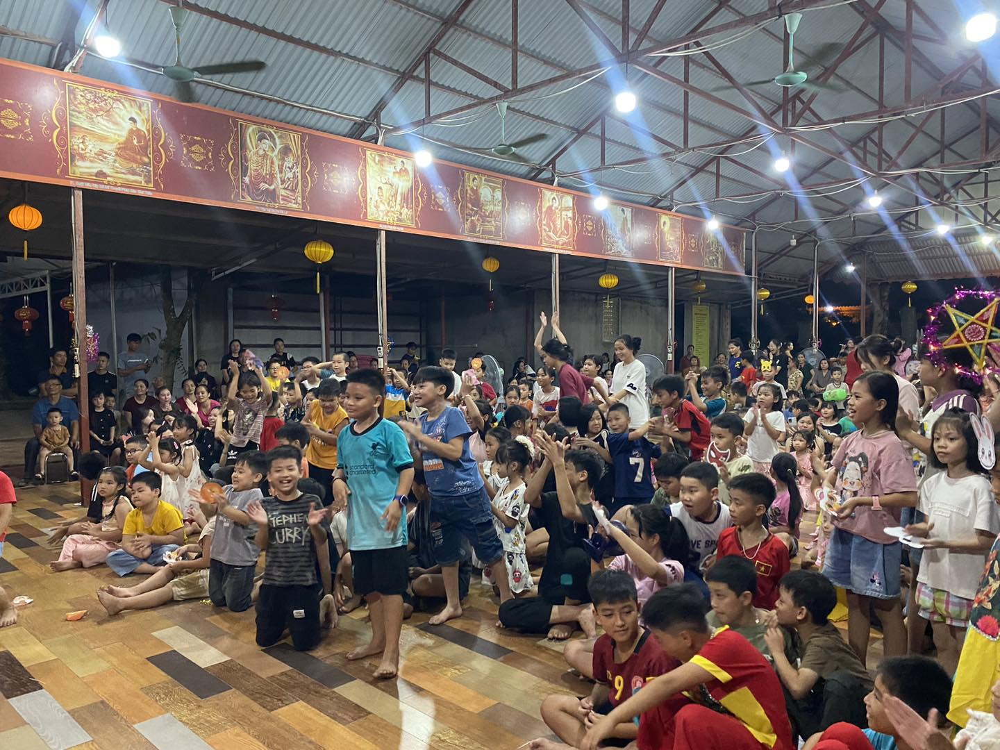
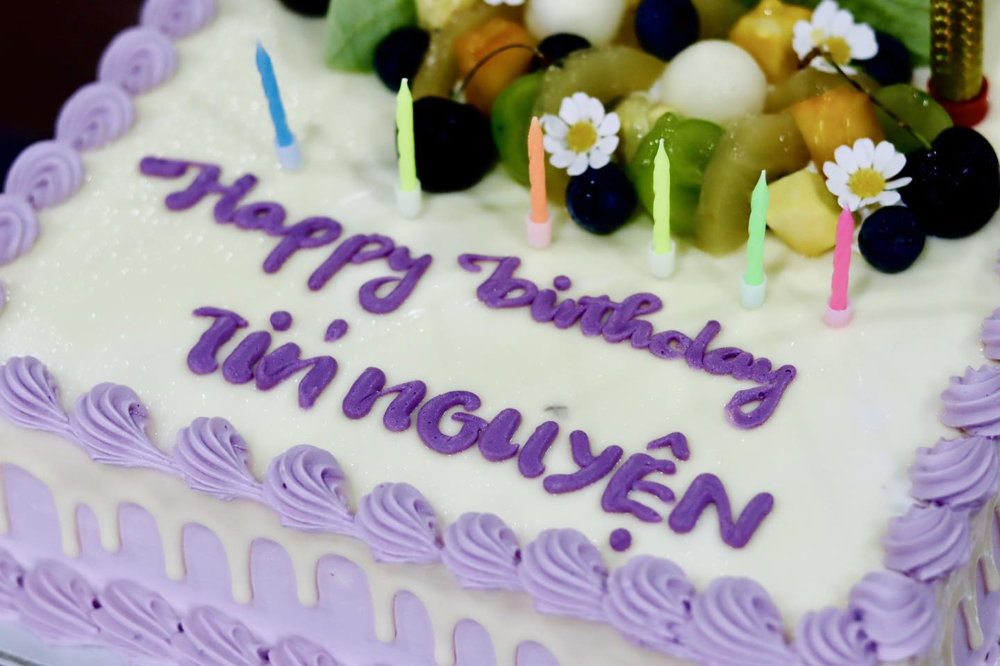
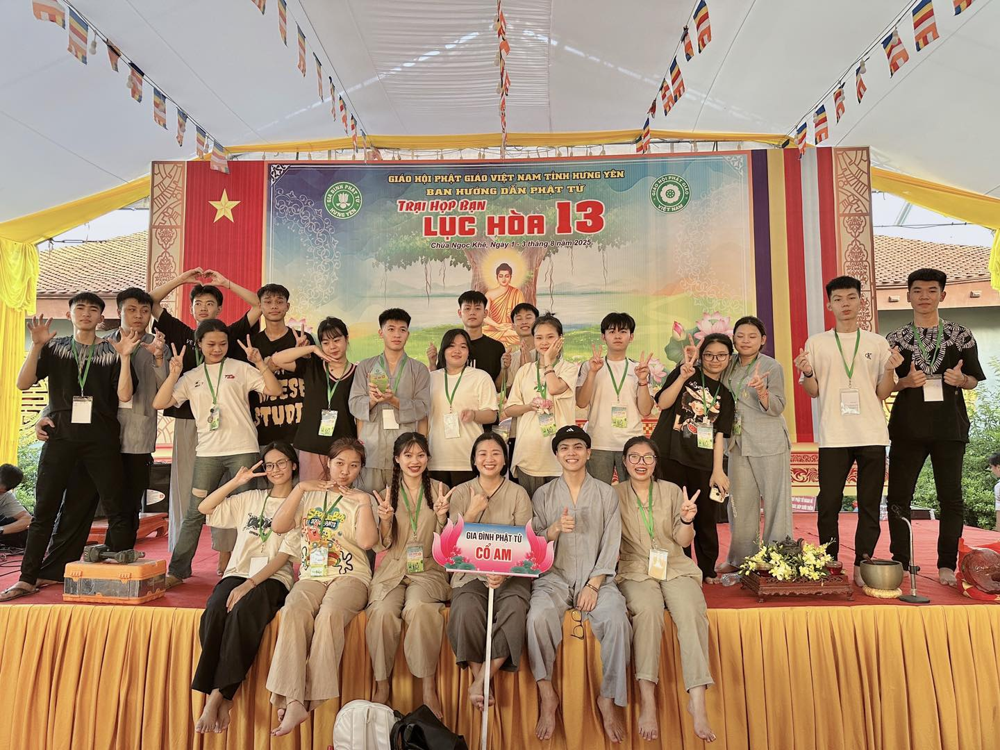

Sự kiện nổi bật 2025

🌕Trung Thu Cho Em 2025🌙
📅 06/10/2025 - Chùa Cổ Am🥮Tết Trung Thu năm nay, chùa Cổ Am lại rộn ràng tiếng cười, tiếng trống lân và ánh sáng lung linh của những chiếc đèn đủ sắc màu. Dưới mái chùa thân thương, các em nhỏ cùng Phật tử gần xa đã có một đêm hội thật ý nghĩa – nơi trăng tròn không chỉ tỏa sáng trên cao, mà còn lan tỏa trong từng nụ cười hồn nhiên, trong từng tấm lòng sẻ chia.
Xem thêm >>
Lễ Vu Lan báo hiếu 2025
📅 26/08/2025 - Chùa Cổ Am❤️ Bông hồng đỏ là niềm hạnh phúc tròn đầy khi còn đủ cả cha mẹ. 💕Bông hồng nhạt là sự ngậm ngùi thương nhớ khi chỉ còn một trong hai. 🤍 Bông hồng trắng là nỗi xót xa nghìn trùng khi cha mẹ đã khuất. 🌹Trên ngực áo, mỗi sắc hoa là một lời nhắc nhở sâu sắc về công ơn sinh thành dưỡng dục. Và mỗi ngọn đèn được thả đi, cũng là một ước nguyện bình an cho cha mẹ hiện tiền thân tâm thường an lạc, cho cha mẹ quá vãng siêu sinh Tịnh độ.
Xem thêm >>
Clb Tín Nguyện bước sang tuổi thứ 6
📅11/08/2025 - Chùa Cổ Am💁🏼♀️Một hành trình tương đối dài để có thể nhìn lại, chúng ta đã dành những tháng năm tuổi trẻ sôi nổi và tràn đầy nhiệt huyết của mình, cùng gắn bó, cùng sẻ chia để có thể xây dựng và phát triển clb như ngày hôm nay. Hành trình đó quả thật không dễ dàng gì,biết bao những thăng trầm, có những lúc tưởng chừng như dừng lại nhưng không chúng ta vẫn ở đây cùng nhau trở về và ngồi dưới mái chùa cổ am thân yêu này cùng nhau tu học Phật Pháp,cùng nhau phụng sự Tam Bảo,tham gia nhiều hoạt động đầy ý nghĩa ( khóa tu mùa hè, hội trại họp bạn lục hòa,....), cùng nhau trưởng thành và hoàn thiện hơn từng ngày đó là một điều vô cùng đáng trân trọng.🙏🙏🙏
Xem thêm >>
Tín Nguyện tại trại Lục Hòa 13🫶🌱🪷
📅05/08/2025 - Chùa Ngọc Khê🪷Mang trong mình màu áo Lam hiền hòa cùng tinh thần lục hòa kính, Gia đình Phật tử Cổ Am đã có mặt tại Trại Lục Hòa 2025 với thật nhiều niềm hân hoan và háo hức. Những bước chân đồng hành, những nụ cười rạng rỡ và những câu chuyện sẻ chia đã dệt nên một hành trình đầy ý nghĩa đó là hành trình của lòng từ bi, của những người con hướng về đạo Phật.🙏
Xem thêm >>